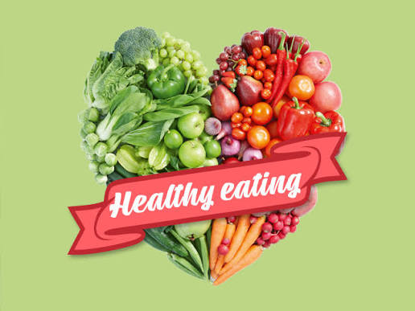

This interactive nutrition learning hub introduces key nutrition concepts and helps users understand how to build healthier eating habits. Click each card to expand and explore more detail!

Healthy eating is about consuming a balanced diet that provides your body with the nutrients it needs to function properly. It is not about restriction, but about balance, variety and moderation.

Macronutrients are nutrients the body needs in large amounts to provide energy and support growth and repair.

Micronutrients are essential vitamins and minerals required in small amounts but are critical for overall health.

Water is essential for nearly every function in the body, including digestion, circulation and temperature control.

The balanced plate method helps create meals that include the right proportions of nutrients.

Foods are grouped based on their nutritional role in the body to help guide balanced eating.

Food labels provide important nutritional information that helps consumers make informed choices.

Many common beliefs about food are misleading or incorrect. Understanding facts helps improve decision-making.
Energy balance is the relationship between calories consumed and calories used by the body.
Fibre is a type of carbohydrate that supports digestive health and long-term wellbeing.

Test your understanding of key nutrition concepts through an interactive quiz.

Discover healthier alternatives to common everyday foods.